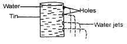
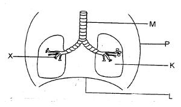
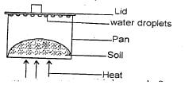
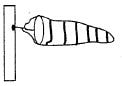

1. Which of the following types of teeth is not part of decidous teeth?
D). Molars2. Which of the following animal products can be gotten from sheep?
A). Wool and mutton3. Below are HIV and AIDS infection stages, which one is the second one?
A). Incubation4. The following are importance of lighting a house except?
C). warming the room5. Oiling tools prevents them from?
B). rusting6. Ships and ferries float on water although they are heavy. This is because of their?
D). shape7. Bouncing back of light on hitting on a shinny surface is called?
C). reflection8. Class four pupils carried out the experiment below;

What were they investigating? D). Pressure in liquids increases with depth9. Which among the following does not describe a use of heat?
C). Lighting10. Below are natural sources of light except?
A). moon11. Which among the following is a domestic use of water?
C). Bathing12. Below are characteristics of all animals except?
D). they make their own food13. A behaviour shown by an animal or a plant is known as?
A). characteristic14. Which one of the following animals move by hopping?
B). Frog15. Which one of the following is not a tuber crop?
C). Tomatoes
16. Which of the labelled parts allows to inflate during breathing in?
C). L17. Which of the following is true of the diagram above when inhaling?
C). Part L moves down18. As charles a standard four pupil observed a cloud with the following characteristics;
1. Appeared high in the sky
2. Looked like bundles of cotton
Which was the best clothing for him? B). Short sleeved shirt19. The digestion of proteins in human digestive system takes place in the?
D). stomach20. The finger like projections found in the ileum and used to absorb food are called?
D). villi21. Which of the following is not a use of medicine?
C). Enjoyment22. One day, Peter got sick. The doctor gave him some medicine tablets in a package written 2x3. What does this mean?
B). Take two tablets three times a day23. Which of the following is not among the common poisons found at home?
C). Pain balm24. In the digestive system. Water and mineral salts are absorbed in the?
A). colon25. Which one is not a proper use of medicine?
C). Sharing medicine with loved ones26. Standard two pupils were requested by their teacher to touch different samples of soil with their fingers. Which of the following properties of soil were they investigating?
A). Texture27. The surrounding of an animal or plants is known as?
A). environment28. Which of the following is not a component of soil?
B). Vegetation29. Which is the colour of clay soil that has been heated or burnt for a long time?
D). Red30. Class four pupils of carried out the experiment below;

What conclusion did they make? C). Soil has water31. Substances found in food and used to keep our bodies healthy are called?
C). nutrients32. Below are types of foods. Which one does not build and repair our bodies?
B). Cassava33. The main importance of fibre in the diet is to
A). prevent constipation34. Which one of the following is not a use of moving air?
A). Blowing away soil35. Water is stored at home in the following ways except?
B). dams36. During wet season the following animals come out of the soil except?
D). butterflies37. The two soil components that cannot be seen are?
B). air and mineral particles38. Sound is produced when objects?
D). vibrate39. The following are natural ways of lighting a house except?
A). use of heaters40. Standard five pupils observed the following weather instrument during science trip

Which of the following statements is true about the above weather instrument? A). It should be placed in an open space41. Which of the following weeds grows along the ground and has purple flowers?
C). Wandering jew42. Which is the main way in which HIV and AIDS is spread?
C). Sexual intercourse43. Chemicals used to control weeds are commonly referred to as?
C). herbicides44. Which one of the following cannot be classified as a vertebrates?
B). Insects45. The following are factors affecting floating and sinking. Which one is not?
D). Colour46. Which of the following animals is correctly matched with its movement?
B). Caterpillar - crawling47. The practice of supplying water to crops during dry season is called?
A). irrigation48. The following materials make the organic matter in soil except?
A). burried plastics49. Animals move for the following reasons except?
B). to make their own food50. Which of the following simple tools should be maintained by greasing?
B). Wheelbarrow